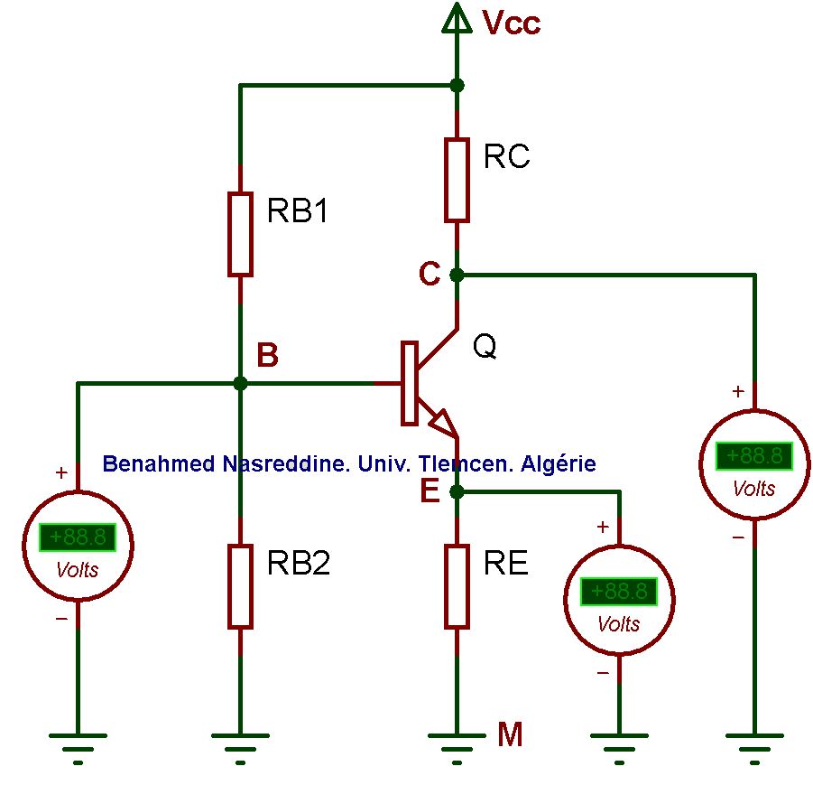

Calculateur des valeurs des resistances de polarisation d'un transistor bipolaire. Par Benahmed Nasreddine, Univ. Tlemcen, Algerie.
Entrez les valeurs de Vcc, beta et Icq pour calculer les valeurs des resistances de polarisation.
Tension d'alimentation (Vcc) :
Gain en courant beta du transistor :
Courant de polarisation (Icq) :
Calculer
Reinitialiser
Schema electrique :
